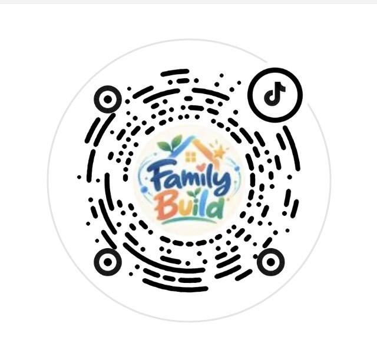
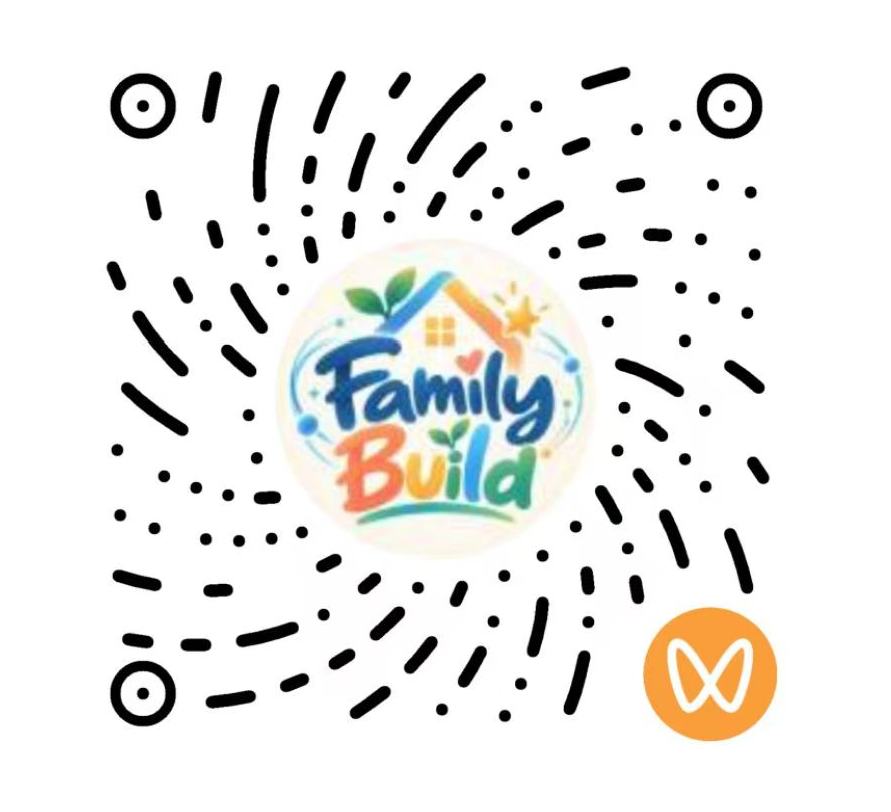
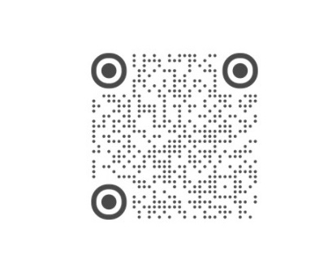

建立 AI 知识地图
从生活中的 AI 开始，沿着清晰的课程路径，理解它如何学习、如何工作。
当孩子在一个 AI 无处不在的世界里长大，
我们想和家长一起，找到更清楚的学习路径。
孩子可以用 AI 写作业吗？几岁开始接触合适？除了学会操作工具，还需要准备什么？
Family Build 关注这些具体的问题。我们筛选教育资源、梳理知识体系，把专业概念转化为孩子听得懂、家庭做得到的学习与实践。
从理解 AI，到提出问题、判断结果，再到动手创造。让家长和孩子在共同探索中，慢慢形成自己的判断。
用知识打开视野，用思考建立判断，
用实践留下作品，在交流中持续成长。
从生活中的 AI 开始，沿着清晰的课程路径，理解它如何学习、如何工作。
追踪 AI 教育观点和趋势，从家庭视角解读：这些变化与孩子有什么关系？
通过亲子任务、创作和项目实践，把学到的知识用在真实的问题上。
连接活动、赛事与作品展示机会，让孩子表达自己的想法，也看见他人的探索。
围绕 60 节家庭 AI 通识课的知识框架，从“看见 AI”走向“决定怎样与 AI 相处”。把分散的知识，整理成可以持续探索的地图。
课程知识框架原图 · 点击放大
参考国内外 AI 素养框架与公开课程资源，围绕家庭场景重新组织知识、表达与实践任务。
以上为知识体系及课程设计的参考资源；不代表相关机构对 Family Build 的官方认证、授权或联合出品。
从通识课程，到观点解读和实践机会。
这些内容，是我们正在做的事。
把专业知识转化为家庭听得懂、做得到的学习内容。
从教育者的讨论出发，理解独立思考、AI 协作与变化之间的关系。
筛选适合家庭参与的活动与赛事，连接学习、创作和展示。
我们希望让家庭的探索走出屏幕，在真实的交流与实践中继续生长。
围绕青少年 AI 创作与作品展示机会，探索合作连接。
亲子 AI 工作坊 · 学校与社区共创
家庭学习内容 · 青少年作品展示
在抖音、视频号与小红书搜索 Family Build
和我们一起 Learn·Think·Build·Grow


